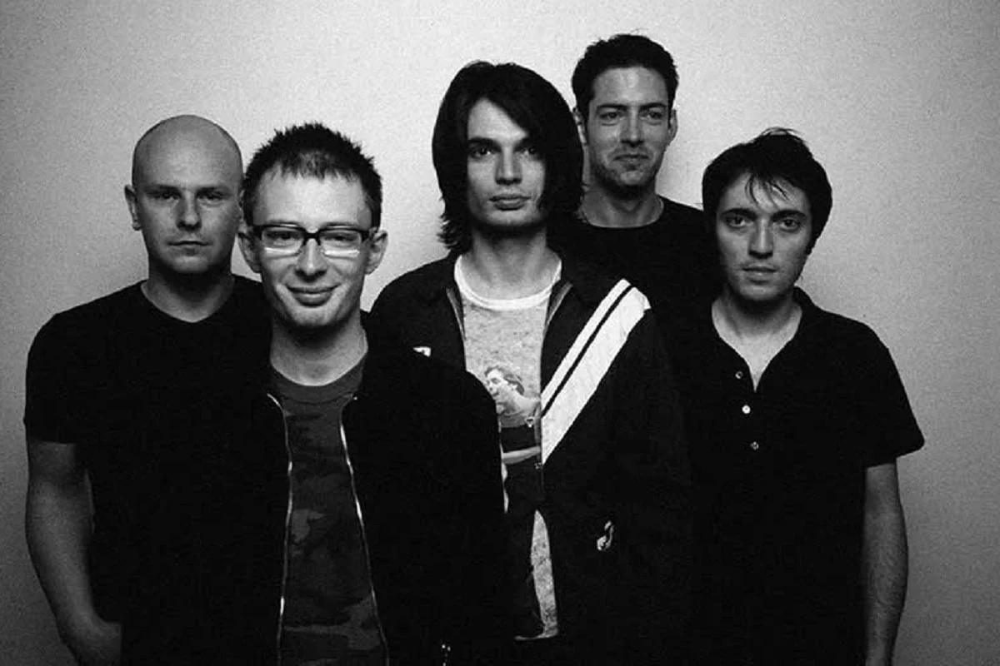
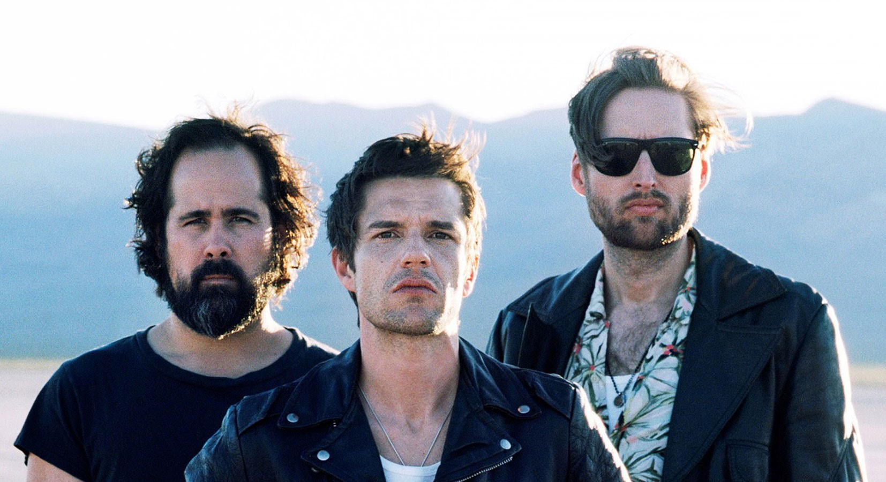
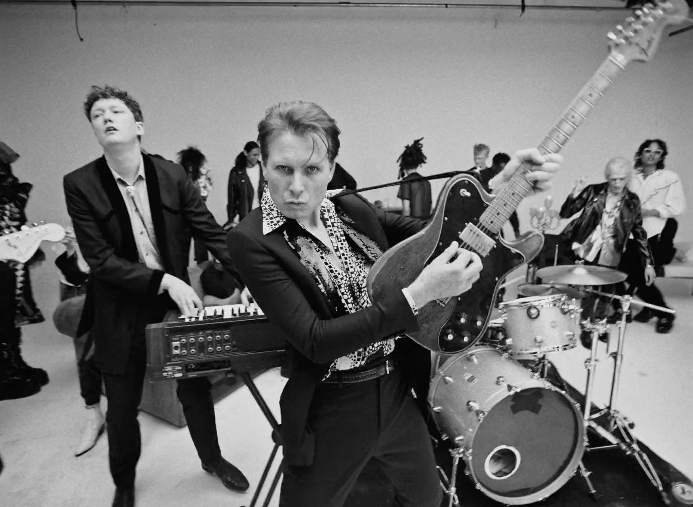
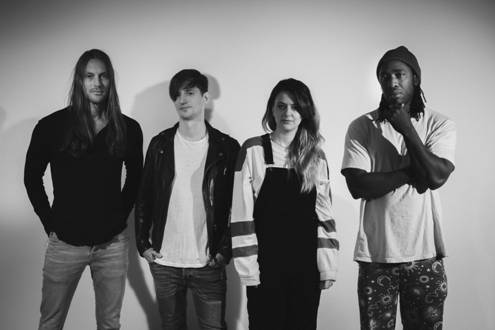
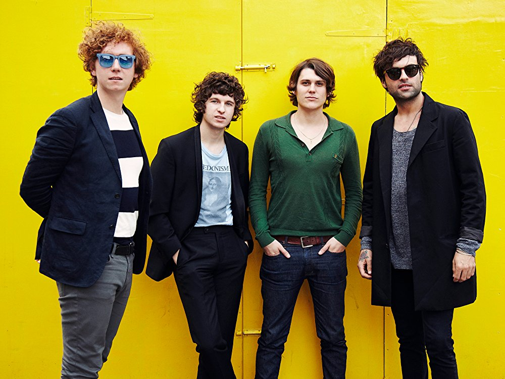
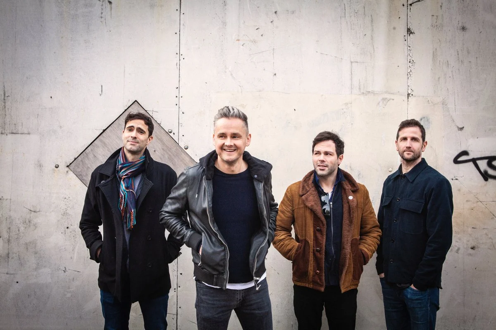
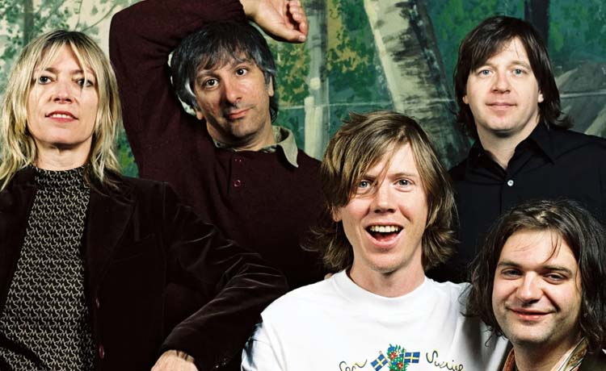

Música-Indie
El término indie proviene del inglés independent (independiente en
español) y se refiere en general a cualquiera de los géneros,
panoramas, subculturas y atributos estilísticos y culturales, con un
acercamiento autónomo y un nivel de planteamiento que se reduce al
lema "hazlo tú mismo". El término Indie se suele usar (aunque no
correctamente) para referirse a un sonido nuevo que un músico
presenta. Si se interpreta de manera más literal, está ligado a las
condiciones de producción y circulación de su obra. El término Indie
se relaciona con la actitud del «hazlo tu mismo» y la capacidad de
trabajar fuera de las lógicas de las compañías y corporaciones de la
industria cultural. También se suele mencionar como Indie a aquellos
grupos que están empezando a tocar y no tienen contrato con un sello
discográfico; es decir, que solo tocan en fiestas, pubs, etc. y no
refiriendose a ellos como un genero.
Arctic Monkeys
Arctic Monkeys es una banda inglesa de rock alternativo e indie
rock proveniente de High Green, un suburbio en las afueras de
Sheffield,…
Radiohead

Radiohead es una agrupación británica (Oxford, Inglaterra) de rock
alternativo que surgió en el año de 1988 cuando un joven de nombre
Thom Yorke…
The Killers

Banda de Rock, originaria de Las Vegas, Estados Unidos. Formada en
2002 después de que Brandon Flowers viera un recital de Oasis en
el hotel Hard…
Franz Ferdinand

Franz Ferdinand es una banda de rock formada en Glasgow (Escocia)
en 2001. El grupo escocés toma su nombre del archiduque
austrohúngaro…
Coldplay

Coldplay es una banda británica de estilo Britpop/Rock
alternativo. Se formó en 1998, y es conocida por sus letras suaves
e introspectivas.
Bloc Party

Bloc Party es una banda de indie rock/Post-Punk formada en el Este
de Londres, Inglaterra en 1998. Su primer sencillo (She's Hearing
Voices) y un…
The Strokes

The Strokes es una banda de rock formada en Nueva York, Estados
Unidos por Julian Casablancas (vocalista y compositor), Nick
Valensi (guitarra…
Interpol

Interpol es una banda neoyorquina de Indie Rock formada en 1998.
La banda se encuentra actualmente formada por Paul Banks
(vocalista, guitarra),…
The Kooks

The Kooks es una banda de indie rock originaria de Brighton,
Inglaterra. Su álbum de debut, "Inside in Inside Out", permaneció
la mitad de 2006 en…
Arcade Fire
Arcade Fire es un grupo originario de Montreal, Quebec, Canadá. El
grupo está compuesto por Win Butler, Régine Chassagne, Richard
Reed Parry,…
Keane

Keane es un grupo musical de piano rock, Britpop y rock
alternativo formado en 1997 procedente de Battle, Reino Unido. Los
miembros actuales son…
Sonic Youth

Sonic Youth es una banda estadounidense de rock alternativo,
formada en el año 1981 en New York, pionera de este género junto
con